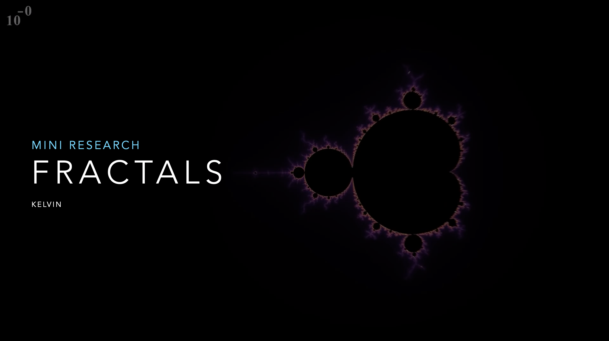
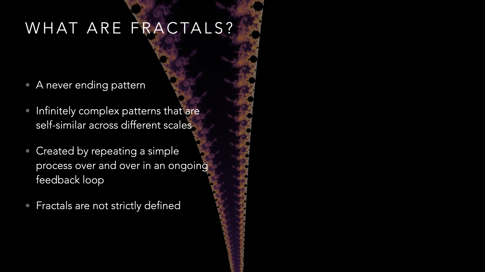
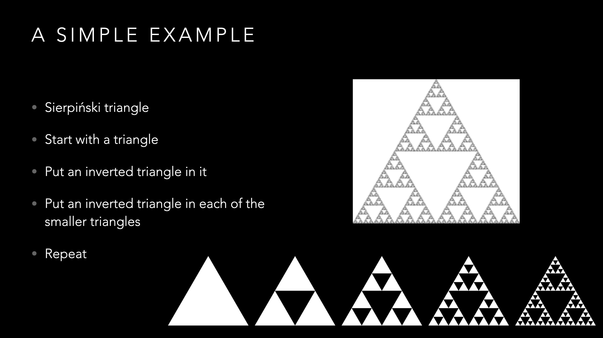
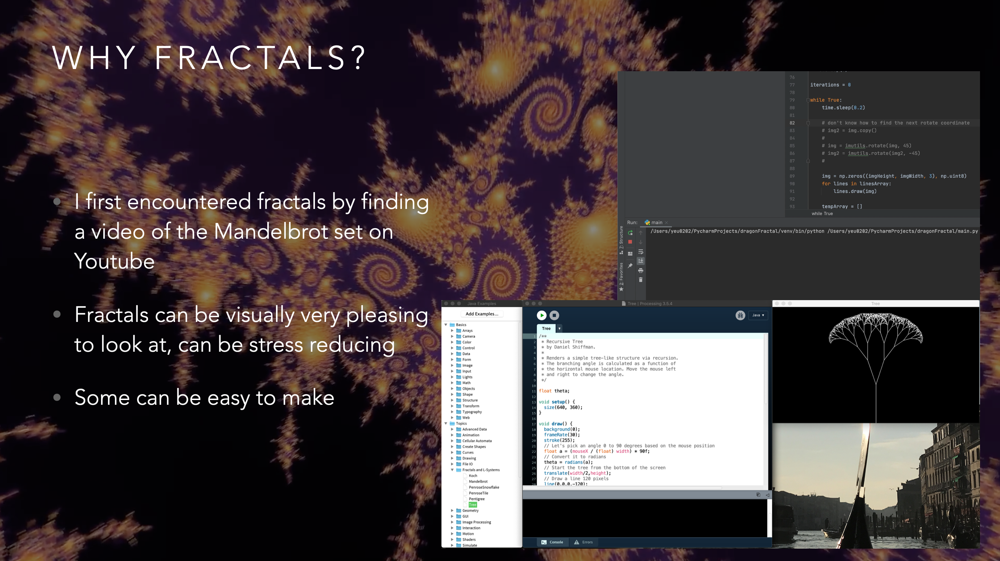
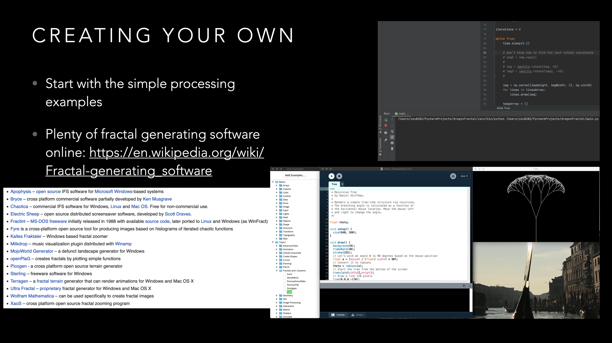

Fractals
I did a mini research presentation for Magnus's class on Fractals. I also made a dragon fractal visualization using OpenCV in Python previously, and used it in this presentation.
Presentation Screenshots
    
These are some screenshots from the presentation, I basically introduced fractals to the rest of the class and showed a few examples.
Dragon Fractal

Here is the dragon fractal visualization I made using OpenCV in Python. I used a class that would split a line object into two lines every loop.
This isn't a very good way to create fractals as the number of objects multiplied by two every loop, which resulted in long load times after several iterations.
I have uploaded this Python code onto github.
I have uploaded this Python code onto github.
Additional comments
I might improve the dragon fractal visualization in the future as this visualization has long load times past 15 iterations.
I will definitely explore fractals more in the future as they fascinate me and also look amazing.